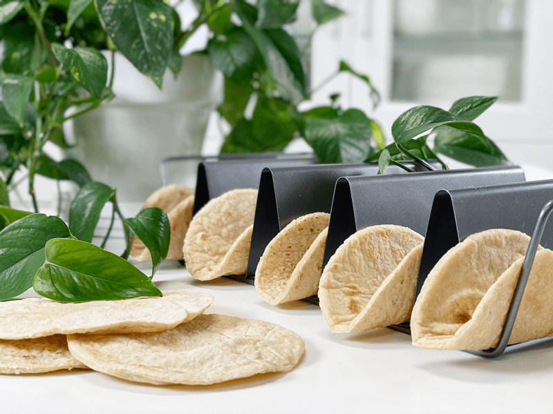
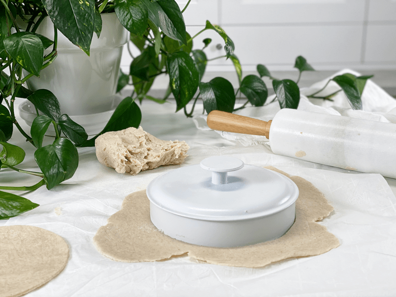
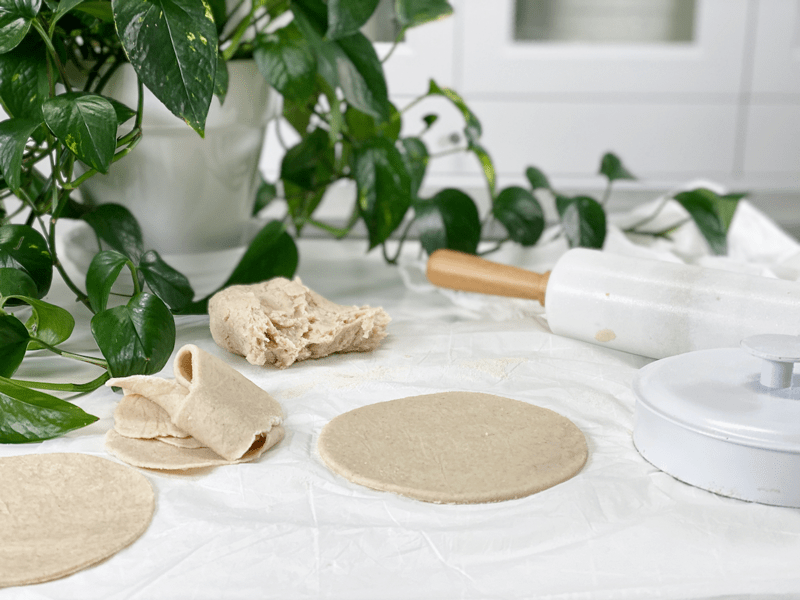
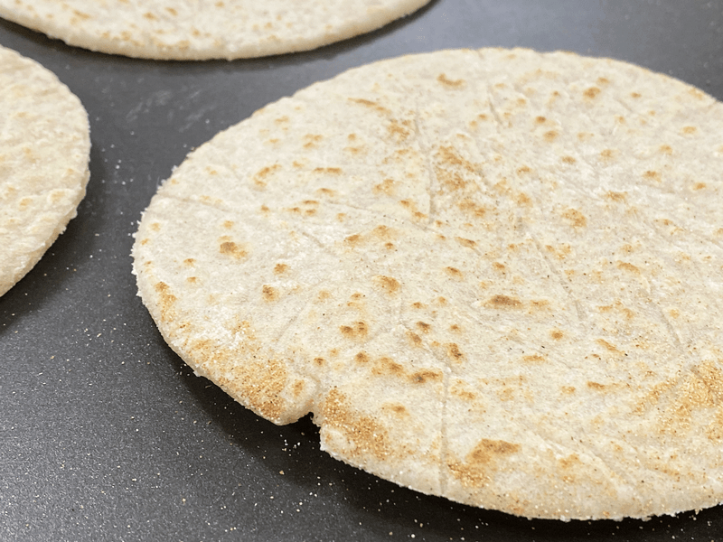
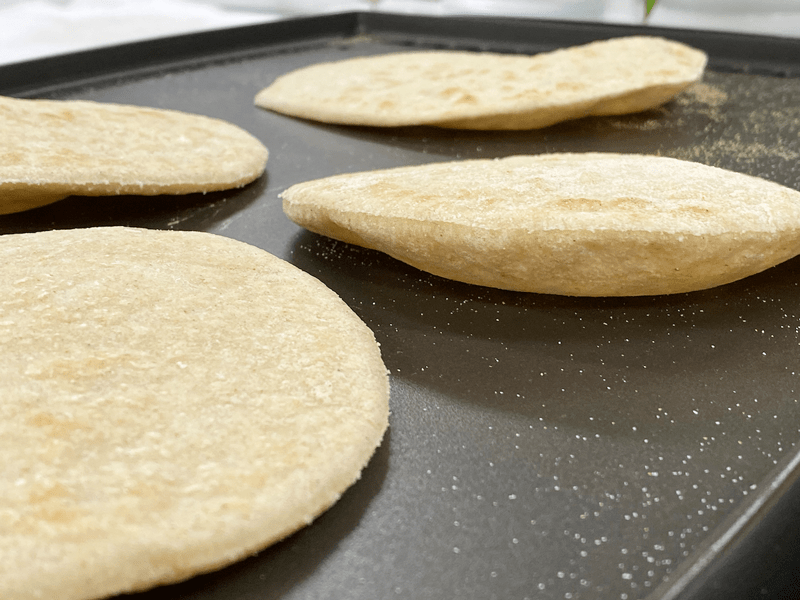
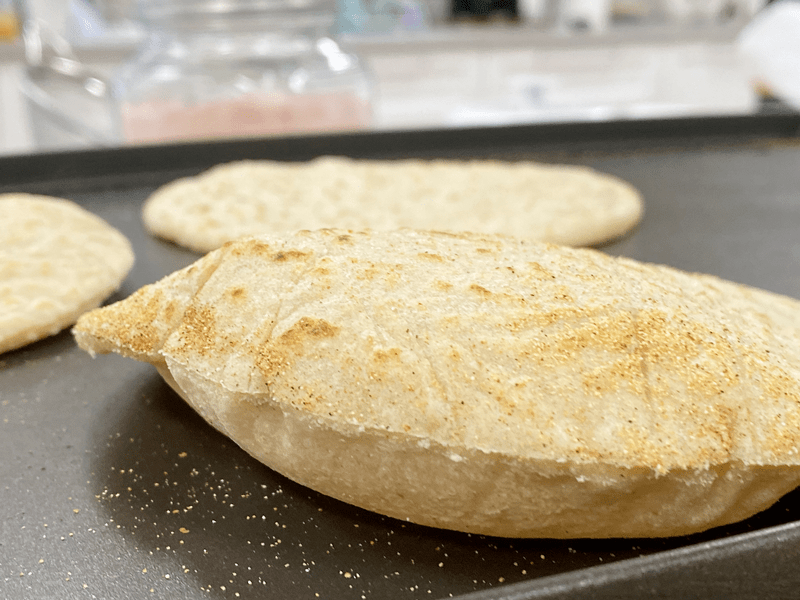
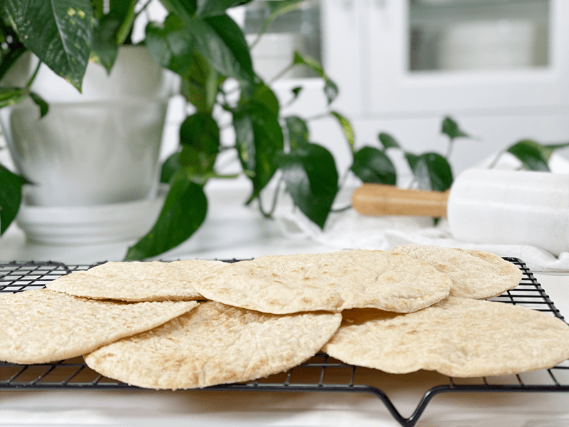
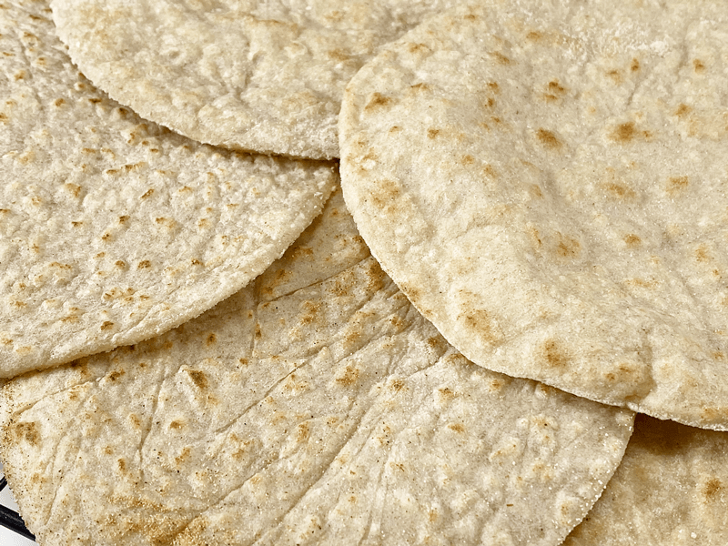
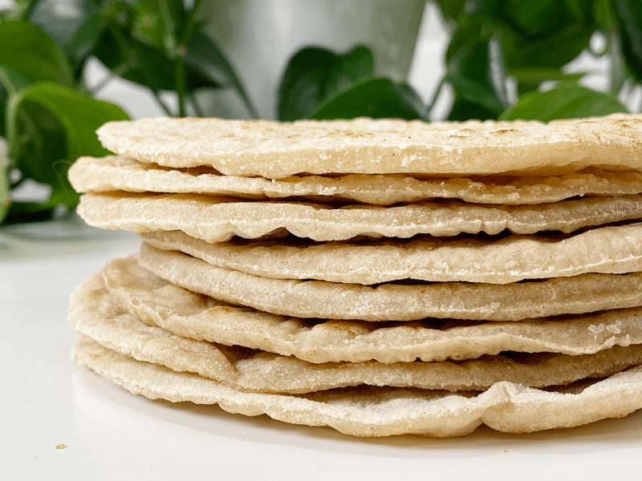

Brown Rice Flour Tortillas | Cooked | Oil-Free | Gluten-Free
Today, I created a soft, pliable, flexible, and delicious brown rice tortilla wrap. Well, not just one tortilla but MANY. Not every recipe is a home run on the first try. Some take several renditions to get it right, and this recipe was one of them. I have many demands of my recipes: they must be vegan, gluten-free, nutritious, delicious, and they must function as intended, especially a tortilla/wrap! They can’t be cracking and falling apart. Heck no! They must hold together in order to hold a variety of fillings–this is NOT a small task.

While I was working out in the studio kitchen making these tortillas, I was singing out loud—loud being the operative word. If I don’t have music playing, I tend to sing made-up songs. Today, I was singing (bellowing more like it, great acoustics in the studio ) a song that I created about Bob. From afar he heard his name and thought I was either dying or calling him, so he came a-running.
As he entered the studio, he said, “Are you okay? Did you call me?” (looking at my pile of tortillas) “Do you need me to taste test something?” His face went from worried, to quizzical, to hoping I would say yes to the latter question. He caught me off guard as I was just singing. He approached the table, picked up a tortilla, and started waving it in the air. “Yes, yes, please taste-test it,” I snickered. He disappeared into the house and returned with almond butter and jam slathered on it. He scarfed it down and asked for another. Who am I to deny that man?! “Eat them up, just save me enough so I can take some photos!”
Tortilla Techniques
- This recipe is easy to make, and using the following techniques will help with your success. Before veering off and changing up ingredients, make the recipe as instructed so you can see how the ingredients taste and play together.
- Once the dough is mixed, it will appear too thick, maybe a smidgen gummy, and a little lumpy. Cool! That means you did everything right. Trust me, once you start rolling it out, it will turn into a smooth tortilla.
- Use two pieces of parchment paper to roll the dough ball in between. It will crinkle a tad, leaving some wrinkle lines in the tortilla, but learn to embrace them! They add character. You will need some extra almond flour when rolling the dough out.
- Be sure to roll the tortillas evenly. If they are thicker on one side, they will cook unevenly. I rolled mine to about 1/8″ thickness, which made a great pliable texture.
Ingredient Run-Down
When creating this recipe, I found that the combination of all of the ingredients created the best texture and taste. Trust me; I went through quite a few versions, and this one is the winner!
Brown Rice Flour
- Brown rice flour is a wonderful option if you’re looking to avoid wheat flour and/or gluten. It’s considered a whole-grain flour and contains the bran, germ, and endosperm.
- Rice flour comes in three different forms: white, brown, and sweet rice. I prefer to use brown rice since the husk remains intact, which provides more fiber and nutritional value, such as increased calcium and zinc.
- Brown rice flour has a nutty flavor and works best when combined with other flours to help avoid a crumbly, dry texture. For this reason, I added the arrowroot and psyllium husk.
- Budget Saver: Make your own brown rice flour! You will need a high-powered blender, food processor, or a grain grinder and grind it to a flour-like consistency. As far as savings, you can save about 50 percent versus buying it pre-ground.
Arrowroot
- I added arrowroot because it is great for baking, as it gives more structure and body to the finished product. It doesn’t lend any taste to a recipe.
- Arrowroot powder is harvested from the tubers of its plant without the use of harsh chemicals or high heat. In fact, the modern extraction process is still natural and includes washing, peeling, soaking, and drying the fleshy roots in the sun.
- Arrowroot is used most often as a thickener in food. It serves as a gluten-free, healthier alternative to cornstarch, which is often a genetically modified (GMO) product.
- In terms of health benefits, it is known to be beneficial for sensitive digestive systems, as it is one of the easiest starches for the body to digest. It’s touted as a natural immunity booster. Perhaps arrowroot’s best feature of all is its anti-inflammatory properties. (1)
Psyllium Husk Powder
- Psyllium husk powder has superpowers when it comes to cooking. Its excellent pliability, gluten-like-structure, and undetectable flavor/color make it a staple in my pantry.
- Due to its high fiber content, it’s often sold as a laxative, which can be good to know if you have a sensitive digestive system. In ratio to other ingredients, you don’t need to worry about these tortillas causing you to run to the bathroom.
- It is inexpensive and can be readily found in grocery stores. A little bit goes a long way!
- If you already have some on hand but it’s in full husk form, be sure to toss it in the grinder to create a fine flour texture.
 Ingredients
Ingredients
Yields 8 tortillas (5.75″ diameter) + a small sampler for the chef
- 1 cup brown rice flour
- 2 Tbsp arrowroot
- 2 Tbsp psyllium husk powder
- 1 tsp sea salt
- 1 1/4 cups boiling water
Preparation
- Whisk the brown rice, arrowroot, psyllium husk powder, and salt together in a mixing bowl.
- If there are any lumps in the mix, push it through a fine-mesh strainer so the texture is nice and powdery.
- Add the boiling water, giving it a good stir.
- Once the dough is cool enough to handle, knead with your hands.
- Preheat a cast-iron skillet or non-stick pan over medium heat.
- If you don’t have a non-stick surface to cook on, you will want to add a tiny bit of oil.
- Pull off a chunk of dough, about 1/4 cup (don’t measure, you’ll get the feel for it).
- Roll out each piece of dough between two pieces of parchment paper.
- Dust the bottom sheet with rice flour, flatten the dough ball in your hand, and press each side into the rice flour. This step will help prevent the dough from sticking to the paper and rolling pin.
- Roll out to about 1/8″ thickness. If it’s rolled too thin, it won’t peel off in one piece. If that happens, roll it into a ball again and re-roll it. If it’s any thicker, it can create a gummy tortilla.
- For perfect circles, use a saucepan lid or a plate that is 6-8″ in diameter to use as a template. Press it on the dough and remove any excess dough from the outer ring.
- Place the tortilla in the pan and cook for 1-2 minutes on each side. Small brown spots will form. Don’t overcook or they will get stiff and crack when bent.
- They will puff up–don’t press the air out, just let them do their thing. As they cool, the air will release, giving them that authentic tortilla appearance.
- Transfer the cooked tortilla to a cooling rack and cover with a clean dish towel to keep them soft and warm.
Storing Brown Rice Tortillas
- These brown rice tortillas are best served warm, right after cooking.
- To store for later, layer pieces of parchment paper between each tortilla in an airtight container.
- Tortillas can be stored in the refrigerator for 5-6 days or in the freezer for 2-3 months.
- When ready to use stored tortillas, allow them to come to room temperature. They can be reheated briefly on a warm skillet.
-

-
After rolling out the dough, I used a lid from storage container as a cutter.
-

-
You can skip this step and make rustic-style tortillas.
-

-
Cook until they puff up a little and small brown spots form on each side.
-

-
I got a kick out of watching them puff up.
-

-
This one got really big. No need to press the air out; it will escape as it cools.
-

-
Make sure they cool before storing. Best to slide a piece of parchment paper in between them so they don’t stick to one another.
-

-
Not too attractive of a photo, but I wanted you see a close-up of what to expect after they are done cooking.
-

-
Stacked up and ready to be enjoyed!
© AmieSue.com